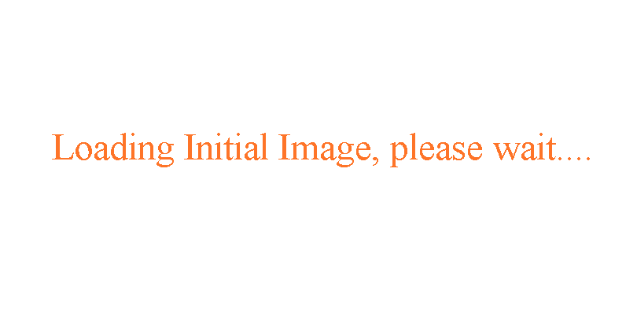

OpenPlans.org Geoserver WFS/WMS Demonstration Application
Zoom Out
up
<

>
down
Hover over the yellow and red dots to see a thumbnail of a picture. Then click on the picture to see it full size.
You can also click anywhere on the map to add your own image.
DEBUG LOG